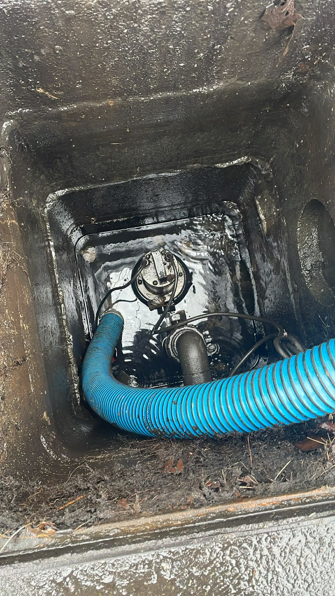
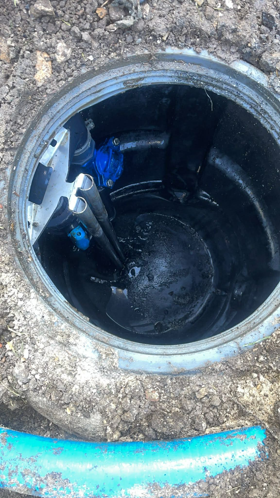
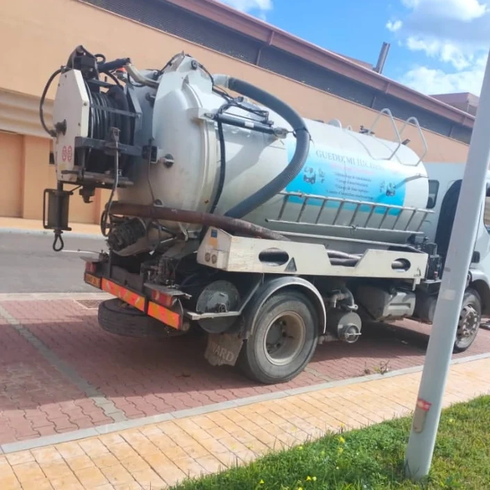

<!DOCTYPE html>
<html lang="fr">
<head>
  <meta charset="UTF-8">
  <meta name="viewport" content="width=device-width, initial-scale=1.0">

  <title>Débouchage IDF | Urgence débouchage canalisation 24h/24</title>

  <!-- ✅ DESCRIPTION SEO -->
  <meta name="description" content="Débouchage IDF intervient 24h/24 et 7j/7 dans toute l’Île-de-France pour le débouchage de canalisations, WC, éviers et douches.">

  <!-- ✅ FAVICON GOOGLE (IMPORTANT) -->
  <link rel="icon" type="image/png" sizes="48x48"
        href="https://souhailabeji.github.io/D-bouchageIDFfrance/log.png">

  <!-- ✅ LOGO OFFICIEL GOOGLE -->
  <script type="application/ld+json">
  {
    "@context": "https://schema.org",
    "@type": "Organization",
    "name": "Débouchage IDF",
    "url": "https://souhailabeji.github.io/D-bouchageIDFfrance/",
    "logo": "https://souhailabeji.github.io/D-bouchageIDFfrance/log.png"
  }
  </script>

  <!-- ✅ LOCAL BUSINESS -->
  <script type="application/ld+json">
  {
    "@context": "https://schema.org",
    "@type": "LocalBusiness",
    "name": "Débouchage IDF",
    "image": "https://souhailabeji.github.io/D-bouchageIDFfrance/log.png",
    "address": {
      "@type": "PostalAddress",
      "addressRegion": "Île-de-France",
      "addressCountry": "FR"
    },
    "telephone": "+33184609999",
    "url": "https://souhailabeji.github.io/D-bouchageIDFfrance/",
    "areaServed": "Île-de-France",
    "priceRange": "€€",
    "openingHours": "Mo-Su 00:00-23:59"
  }
  </script>

</head>

<body>
  <!-- Contenu du site -->
</body>
</html>

  <style>
    ** { 
    margin:0; 
    padding:0; 
    box-sizing:border-box; 
    font-family: "Poppins", Arial, sans-serif; 
}

body { 
    background-color:#e6f0fa; /* bleu très clair pour le fond */
    color:#333; 
    line-height:1.6; 
}

a { 
    text-decoration:none; 
    color:inherit; 
}

img { 
    max-width:100%; 
}

/* HEADER */
header {
    background-color:#1e3c72; /* bleu foncé pour le header */
    color:white;
    padding:15px 5%;
    display:flex;
    justify-content:space-between;
    align-items:center;
    flex-wrap:wrap;
    box-shadow:0 3px 6px hsla(0, 2%, 61%, 0.10);
    position:sticky;
    top:0;
    z-index:999;
}

.logo {
    display:flex;
    align-items:center;
    gap:10px;
}

.logo img { 
    width:50px; 
    border-radius:8px; 
}

header h1 { 
    font-size:26px; 
}

nav { 
    display:flex; 
    gap:20px; 
    align-items:center; 
}

nav a { 
    color:white; 
    font-weight:600; 
    transition:0.3s; 
}

nav a:hover { 
    text-decoration:underline; 
}

/* Bouton téléphone */
.phone-box {
    background-color:#cfe6ff; /* bleu clair */
    color:#1e3c72; /* bleu foncé texte */
    padding:8px 15px;
    border-radius:25px;
    font-weight:bold;
    display:flex;
    align-items:center;
    gap:8px;
    transition:0.3s;
}

.phone-box img { 
    width:20px; 
}

.phone-box:hover { 
    background-color:#a6d1ff; /* bleu plus lumineux au hover */
    transform:scale(1.05); 
}

.phone-floating {
    display:none;
    position:fixed;
    bottom:20px;
    right:20px;
    background-color:#1e3c72; /* bleu foncé */
    color:white;
    padding:15px 20px;
    border-radius:50px;
    font-weight:bold;
    font-size:16px;
    box-shadow:0 4px 10px rgba(0,0,0,0.2);
    display:flex;
    align-items:center;
    gap:8px;
    transition:0.3s;
    z-index:1000;
}

.phone-floating img { 
    width:24px; 
}

.phone-floating:hover { 
    background-color:#1050a0; /* bleu plus intense au hover */
    transform:scale(1.05); 
}

.hero {
  position: relative;
  overflow: hidden;
  height: 600px; /* adapte selon ton besoin */
  text-align: center;
  color: white;
}

.hero-bg {
  position: absolute;
  top: 0; left: 0;
  width: 100%;
  height: 100%;
  background-size: cover;
  background-position: top;
  opacity: 0;
  transition: opacity 2s ease-in-out;
}


.hero-content {
  position: relative;
  z-index: 10;
  top: 50%;
  transform: translateY(-50%);
}

/* Animation fade */
@keyframes fade {
  0%, 33%, 100% { opacity: 0; }
  11%, 22% { opacity: 1; }
}

    /* SERVICES */
    .services { background-color:#fff; padding:60px 20px; text-align:center; }
    .services h2 { color:#e8a043; font-size:32px; margin-bottom:30px; }
    .service-container { display:flex; flex-wrap:wrap; justify-content:center; gap:30px; }

    .service-card {
      background-color:#fef9f3;
      border-radius:15px;
      box-shadow:0 4px 10px rgba(0,0,0,0.1);
      width:280px;
      padding:20px;
      transition:0.3s;
    }

    .service-card:hover { transform:translateY(-5px); box-shadow:0 6px 15px rgba(0,0,0,0.15); }
    .service-card img { width:80px; margin-bottom:15px; }
    .service-card h3 { color:#e8a043; margin-bottom:10px; }

    /* ABOUT */
    .about { background-color:#f8f4ef; padding:60px 20px; text-align:center; }
    .about h2 { color:#e8a043; font-size:32px; margin-bottom:15px; }
    .about p { max-width:700px; margin:0 auto; font-size:18px; }

    /* CONTACT */
    .contact { background-color:#fff7ec; padding:60px 20px; text-align:center; }
    .contact h2 { color:#e8a043; font-size:30px; margin-bottom:15px; }

    form { max-width:400px; margin:0 auto; text-align:left; }
    input, textarea { width:100%; margin-bottom:15px; padding:12px; border:1px solid #ccc; border-radius:8px; font-size:15px; }
    button { background-color:#e8a043; color:white; border:none; padding:14px 25px; border-radius:8px; cursor:pointer; width:100%; font-size:16px; transition:0.3s; }
    button:hover { background-color:#d28c37; }

    footer { background-color:#cab995ff;; color:white; text-align:center; padding:15px; font-size:14px; margin-top:40px; }

    /* RESPONSIVE */
    @media (max-width:768px){
      header { flex-direction:column; gap:10px; text-align:center; }
      .hero h2 { font-size:28px; }
      .service-card { width:90%; }
      .phone-box { width:100%; justify-content:center; }
      .phone-floating { display:flex; }
    }
  </style>
</head>

<body>

  <!-- HEADER -->
  <header>
    <div class="logo">

      <h1>Débouchage IDF</h1>
    </div>
    
   <nav style="text-align:center; flex:1;">
    <a href="#services" style="margin:0 15px; color:white; font-weight:bold; text-decoration:none;">Services</a>
    <a href="#contact" style="margin:0 15px; color:white; font-weight:bold; text-decoration:none;">Contact</a>
  </nav>

  <!-- 📞 Bouton Téléphone vibrant -->
<a href="tel:+33753696428" class="call-btn">
  <i class="fa-solid fa-phone"></i>
  <span>‪06 02 78 48 89‬

</span>
</a>

<!-- ✅ Font Awesome pour l’icône -->
<link rel="stylesheet" href="https://cdnjs.cloudflare.com/ajax/libs/font-awesome/6.5.0/css/all.min.css">

<style>
  /* ---- Bouton Téléphone vibrant ---- */
.call-btn {
    position: fixed;
    top: 15px;
    right: 25px;
    background: #1e3c72; /* bleu foncé */
    color: #fff; /* texte blanc */
    font-weight: bold;
    font-size: 1.1em;
    text-decoration: none;
    display: flex;
    align-items: center;
    gap: 8px;
    padding: 10px 18px;
    border-radius: 50px;
    box-shadow: 0 6px 0 #1050a0; /* ombre bleu plus clair */
    transition: transform 0.2s ease, box-shadow 0.2s ease;
    z-index: 9999;
    animation: vibrate 2.5s infinite;
}

.call-btn i {
    background: #cfe6ff; /* cercle icône bleu ciel */
    color: #1e3c72;      /* icône bleu foncé */
    border-radius: 50%;
    padding: 8px;
    font-size: 1.2em;
    box-shadow: 0 2px 6px rgba(0,0,0,0.2);
}

.call-btn:hover {
    transform: translateY(2px);
    box-shadow: 0 3px 0 #1050a0;
    background: #1050a0; /* bleu plus clair au hover */
}

/* Animation vibration plus douce pour mobile */
@keyframes vibrate {
    0%, 100% { transform: translate(0); }
    10%, 30%, 50%, 70%, 90% { transform: translateX(-1px); }
    20%, 40%, 60%, 80% { transform: translateX(1px); }
}

/* ✅ Adaptation mobile */
@media (max-width: 768px) {
    .call-btn {
        bottom: 20px;
        top: auto;       /* enlève la position en haut */
        right: 50%;
        transform: translateX(50%);
        font-size: 1em;
        padding: 12px 20px;
        box-shadow: 0 4px 8px rgba(0,0,0,0.3);
        animation: vibrate 3s infinite;
    }

    .call-btn i {
        font-size: 1em;
        padding: 7px;
    }
}

/* ✅ Fond de page harmonisé bleu clair */
body {
    margin: 0;
    font-family: Arial, sans-serif;
    background-size: cover;
}


<!-- N'oublie pas d’ajouter Font Awesome dans ton <head> si ce n’est pas déjà fait -->
<link rel="stylesheet" href="https://cdnjs.cloudflare.com/ajax/libs/font-awesome/6.4.0/css/all.min.css">


<!-- ✅ Font Awesome pour l’icône -->
<link rel="stylesheet" href="https://cdnjs.cloudflare.com/ajax/libs/font-awesome/6.5.0/css/all.min.css">

<style>
body {
  background-color: #f5f0e6; /* Beige doux en fond */
  font-family: Arial, sans-serif;

}

.phone-box {
  display: inline-flex;
  align-items: center;
  gap: 10px;
  background-color: #cab995ff; /* Orange principal */
  color: white;
  text-decoration: none;
  padding: 10px 18px;
  border-radius: 30px;
  font-weight: bold;
  font-size: 1.1em;
  transition: all 0.3s ease;
  box-shadow: 0 2px 8px rgba(255, 123, 0, 0.4);
}


</style>

  </header>

 
 <section class="heroo">

  <div class="heroo-content">
    <h1>Débouchage IDF</h1>
    <p>
      Urgence débouchage canalisation<br>
      24h/24 – 7j/7 en Île-de-France
    </p>
  </div>

  <div class="heroo-images">
    
    
    
  </div>

</section>

    <style>
     .heroo {
  min-height: 100vh;
  background: linear-gradient(
    rgba(0, 0, 0, 0.75),
    rgba(0, 0, 0, 0.75)
  );
  display: flex;
  flex-direction: column;
  justify-content: center;
  align-items: center;
  text-align: center;
  padding: 40px 20px;
  color: #fff;
}

/* 🔥 IMAGE UNIQUEMENT ICI */
.heroo-content {
  position: relative;
  background: url("c1f6e5a7-14a1-45dc-9521-ccfb1df38ed2.jpeg")
              center / cover no-repeat;

  max-width: 700px;
  width: 100%;
  min-height: 260px;

  padding: 40px 50px;
  border-radius: 20px;

  box-shadow: 0 15px 40px rgba(0,0,0,0.6);
}

/* Overlay sombre */
.heroo-content::before {
  content: "";
  position: absolute;
  inset: 0;
  background: rgba(0,0,0,0.6);
  border-radius: 20px;
}

/* Texte */
.heroo-content h1,
.heroo-content p {
  position: relative;
  z-index: 1;
}

.heroo-content h1 {
  font-size: 2.6rem;
  margin-bottom: 15px;
  text-transform: uppercase;
}

.heroo-content p {
  font-size: 1.3rem;
  line-height: 1.6;
}

/* Images */
.heroo-images {
  margin-top: 40px;
  display: flex;
  gap: 20px;
  flex-wrap: wrap;
  justify-content: center;
}

.heroo-images img {
  width: 260px;
  height: 180px;
  object-fit: cover;
  border-radius: 15px;
  box-shadow: 0 10px 25px rgba(0,0,0,0.6);
}

/* Mobile */
@media (max-width: 768px) {
  .heroo-content {
    padding: 30px 20px;
  }

  .heroo-content h1 {
    font-size: 2rem;
  }

  .heroo-content p {
    font-size: 1.1rem;
  }

  .heroo-images img {
    width: 90%;
    height: auto;
  }
}


</section>
    


  <!-- SERVICES -->
<section id="services" class="services">
  <h2>Nos Services</h2>
  <div class="service-container">

    <!-- Service 1 -->
    <div class="service-card">
      
      <h3>Débouchage de canalisations</h3>
      <p>
        Nous assurons le débouchage complet de toutes vos canalisations : éviers, lavabos, douches, WC et réseaux extérieurs.  
        Grâce à nos équipements professionnels (furet électrique, hydrocureuse haute pression), nous éliminons durablement tout type d’obstruction, qu’il s’agisse de graisses, de racines ou de calcaire.  
        <br><strong>Résultat :</strong> un écoulement fluide et sans odeur en un temps record.
      </p>
    </div>

    <!-- Service 2 -->
    <div class="service-card">
      
      <h3>Inspection par caméra</h3>
      <p>
        Avant toute intervention, notre équipe peut effectuer une inspection vidéo de vos canalisations.  
        À l’aide de caméras haute résolution, nous identifions précisément les fissures, bouchons, fuites ou déformations dans vos tuyaux.  
        <br><strong>Avantage :</strong> un diagnostic fiable sans casse, permettant un devis précis et des réparations ciblées.
      </p>
    </div>

    <!-- Service 3 -->
    <div class="service-card">
      
      <h3>Urgence 24h/24</h3>
      <p>
        Une canalisation bouchée au milieu de la nuit ? Pas de panique.  
        Nos techniciens sont disponibles 24h/24 et 7j/7 pour toute urgence de débouchage, fuite ou refoulement d’eau.  
        Nous intervenons rapidement dans toute l’Île-de-France avec un véhicule équipé pour résoudre le problème sur place.  
        <br><strong>Engagement :</strong> une intervention rapide, propre et garantie sans dégâts.
      </p>
    </div>

  </div>
</section>


<style>
/* --- SECTION SERVICES --- */
.services {
  background: linear-gradient(to bottom right, #f8f9fb, #eaf3ff);
  text-align: center;
  padding: 80px 20px;
}

.services h2 {
  font-size: 2.2rem;
  color: #cab995ff;
  margin-bottom: 50px;
  position: relative;
  display: inline-block;
}

.services h2::after {
  content: "";
  display: block;
  width: 60%;
  height: 3px;
  background: #cab995ff;
  margin: 10px auto 0;
  border-radius: 3px;
}

/* --- CONTENEUR DES CARTES --- */
.service-container {
  display: flex;
  justify-content: center;
  flex-wrap: wrap;
  gap: 30px;
  max-width: 1100px;
  margin: 0 auto;
}

/* --- CARTES INDIVIDUELLES --- */
.service-card {
  background: #fff;
  border-radius: 15px;
  box-shadow: 0 6px 20px rgba(0,0,0,0.1);
  overflow: hidden;
  width: 320px;
  transition: all 0.4s ease;
  cursor: pointer;
}

.service-card:hover {
  transform: translateY(-8px);
  box-shadow: 0 10px 25px rgba(0,0,0,0.15);
}

.service-card img {
  width: 100%;
  height: 200px;
  object-fit: cover;
  transition: transform 0.5s ease;
}

.service-card:hover img {
  transform: scale(1.05);
}

.service-card h3 {
  font-size: 1.3rem;
  color: #cab995ff;
  margin: 15px 0 10px;
}

.service-card p {
  font-size: 0.95rem;
  color: #555;
  padding: 0 15px 20px;
  line-height: 1.5;
}

/* --- RESPONSIVE --- */
@media (max-width: 768px) {
  .service-card {
    width: 90%;
  }

  .services h2 {
    font-size: 1.8rem;
  }
}
</style>
<!-- ================== SECTION PRESTATIONS STYLE PRO abdi men hne================== -->
<section id="prestations" class="prestations">
  <div class="container">

    <!-- Colonne gauche -->
    <div class="content-left">
      <h1>Débouchage Canalisation : Paris et Île-de-France</h1>
      <p>
        Fort de plus de <strong>25 ans d’expérience</strong>, nous intervenons rapidement chez vous pour déboucher toutes vos canalisations bouchées.
        La demande étant souvent urgente, nous faisons tout notre possible pour vous dépanner rapidement à Paris et dans toute la région Île-de-France.
      </p>

      <p>
        Appelez-nous au <strong>06 02 78 48 89
</strong> pour le débouchage de vos canalisations, fosses septiques ou égouts,
        24h/24 et 7j/7. Nous convenons d’un rendez-vous et intervenons à votre convenance, dans un délai maximal d’une heure !
      </p>

      <p>
        Notre objectif est que vous retrouviez l’usage de vos sanitaires rapidement et durablement.
      </p>

      <h2>Nos prestations : <span>Particuliers, Professionnels, Industries</span></h2>

      <p>
        Nous réalisons tous vos <strong>travaux de débouchage de canalisations</strong>, d’égouts, de vidange de fosse septique
        et d’assainissement, ainsi que le curage de fosses et l’entretien complet de vos installations.
      </p>

      <ul>
        <li> Débouchage WC, lavabo, évier, douche et baignoire</li>
        <li> Curage et détartrage des canalisations</li>
        <li> Vidange et pompage de fosses septiques</li>
        <li> Inspection caméra et diagnostic sans casse</li>
        <li> Dégorgement et nettoyage haute pression</li>
        <li> Réparation et entretien préventif</li>
      </ul>

      <h3>Curage, Assainissement et Dégorgement de Canalisations</h3>
      <p>
        Notre équipe réalise le <strong>curage complet de vos réseaux d’assainissement</strong> et le dégorgement des canalisations
        d’eau usée ou pluviale. Nous disposons de camions hydrocureurs haute pression pour des interventions efficaces et rapides.
      </p>

      <h3>Des conseils personnalisés pour l'entretien de vos canalisations</h3>
      <p>
        Pour éviter les bouchons, versez régulièrement de l’eau chaude mélangée à du vinaigre blanc dans vos conduits.
        Évitez de jeter lingettes, graisses et déchets solides.  
        Nous pouvons également vous proposer un <strong>contrat d’entretien annuel</strong> pour garantir le bon fonctionnement de vos installations.
      </p>

      <h3>FAQ – IDF Débouchage Canalisations Paris & Île-de-France</h3>
      <p><strong>En combien de temps intervenez-vous ?</strong><br>
      En moyenne sous 30 minutes, 24h/24 et 7j/7, selon votre localisation.</p>

      <p><strong>Quels sont vos tarifs ?</strong><br>
      Nos prix sont transparents et fixés selon la nature du bouchon. Devis gratuit sur simple appel.</p>

      <p><strong>Intervenez-vous les week-ends ?</strong><br>
      Oui, nos équipes sont disponibles tous les jours, y compris les jours fériés.</p>

      <p><strong>Proposez-vous un service d’urgence ?</strong><br>
      Oui, nous assurons une astreinte pour toutes les urgences plomberie à Paris et en Île-de-France.</p>
    </div>

    <!-- Colonne droite -->
    <aside class="contact-box">
      <div class="contact-header">📞 On vous rappelle</div>
      <p>Laissez-nous votre numéro de téléphone, un conseiller vous rappellera rapidement.</p>

      <form>
        <label>Nom :</label>
        <input type="text" placeholder="Votre nom">
        <label>Téléphone :</label>
        <input type="tel" placeholder="N° de téléphone sans espace">
        <button type="submit">Envoyer</button>
      </form>

      <div class="info-box">
        <h4>Débouchage de canalisations en Île-de-France</h4>
        <p>
          Notre entreprise, experte en plomberie, propose une large gamme de services :
          débouchage, curage, assainissement, nettoyage et vidange de fosses septiques.
        </p>
        <p>Intervention dans les départements : 75, 77, 78, 91, 92, 93, 94 et 95.</p>
      </div>
    </aside>

  </div>
</section>

<!-- ================== STYLE CSS et hne zada ================== -->
<style>
  .prestations {
    font-family: Arial, sans-serif;
    color: #222;
    line-height: 1.7;
    background: #fff;
  }
  .container {
    display: flex;
    flex-wrap: wrap;
    max-width: 1200px;
    margin: auto;
    padding: 50px 20px;
    gap: 30px;
  }
  .content-left {
    flex: 2;
    min-width: 300px;
  }
  .contact-box {
    flex: 1;
    min-width: 280px;
    background: #f9f9f9;
    border: 1px solid #d7e3ee;
    border-radius: 8px;
    padding: 20px;
  }
  h1, h2, h3 {
    color: rgb(194, 133, 0);
  }
  h1 { font-size: 2em; margin-bottom: 15px; }
  h2 { font-size: 1.5em; margin-top: 25px; }
  h3 { font-size: 1.3em; margin-top: 25px; }
  ul { padding-left: 20px; }
  ul li { margin-bottom: 8px; color: rgb(194, 133, 0); font-weight: 500; }
  strong { color: rgb(194, 133, 0); }

  .contact-header {
    background: #e3f2fb;
    padding: 10px;
    border-radius: 6px;
    font-weight: bold;
    text-align: center;
    margin-bottom: 15px;
  }
  .contact-box form {
    display: flex;
    flex-direction: column;
    gap: 10px;
    margin-bottom: 20px;
  }
  .contact-box input {
    padding: 10px;
    border: 1px solid #ccc;
    border-radius: 6px;
  }
  .contact-box button {
    background: rgb(194, 133, 0);
    color: white;
    border: none;
    padding: 10px;
    border-radius: 6px;
    cursor: pointer;
    font-weight: bold;
  }
  .contact-box button:hover { background: rgb(194, 133, 0); }
  .info-box h4 {
    color: rgb(194, 133, 0);
    margin-top: 15px;
  }
  @media (max-width: 900px) {
    .container { flex-direction: column; }
    .contact-box { order: -1; }
  }
</style>


 <!-- ================== SECTION POURQUOI NOUS CHOISIR ================== -->
<section id="why-choose" style="background:#f9f9f9; padding:70px 20px;">
  <div style="max-width:1200px; margin:auto; text-align:center;">
    <h2 style="font-size:2.6em; color:rgb(194, 133, 0); margin-bottom:20px;">Pourquoi choisir <strong>Débouchage IDF</strong> ?</h2>
    <p style="max-width:850px; margin:auto; font-size:1.1em; color:#555; margin-bottom:50px;">
      Parce que nous savons qu’une canalisation bouchée est une urgence, notre équipe met tout en œuvre pour intervenir rapidement, proprement et efficacement.  
      Découvrez ce qui fait de <strong>Débouchage IDF</strong> la référence en Île-de-France 👇
    </p>

    <div style="display:flex; flex-wrap:wrap; justify-content:center; gap:25px;">

      <!-- Bloc 1 -->
      <div style="background:white; border-radius:10px; box-shadow:0 3px 10px rgba(0,0,0,0.1); width:340px; overflow:hidden; text-align:left;">
        
        <div style="padding:20px;">
          <h3 style="color:rgb(194, 133, 0);">🔧 Expertise et professionnalisme</h3>
          <p style="color:#555; font-size:0.95em;">Nos techniciens qualifiés sont formés aux dernières techniques de débouchage et de curage, garantissant un service durable et sans dégâts.</p>
        </div>
      </div>

      <!-- Bloc 2 -->
      <div style="background:white; border-radius:10px; box-shadow:0 3px 10px rgba(0,0,0,0.1); width:340px; overflow:hidden; text-align:left;">
        
        <div style="padding:20px;">
          <h3 style="color:rgb(194, 133, 0);">🚨 Intervention rapide 24h/24</h3>
          <p style="color:#555; font-size:0.95em;">Nous intervenons en moins de 30 minutes dans toute l’Île-de-France, 7j/7, y compris les jours fériés.</p>
        </div>
      </div>

      <!-- Bloc 3 -->
      <div style="background:white; border-radius:10px; box-shadow:0 3px 10px rgba(0,0,0,0.1); width:340px; overflow:hidden; text-align:left;">
        
        <div style="padding:20px;">
          <h3 style="color:rgb(194, 133, 0);">💧 Satisfaction garantie</h3>
          <p style="color:#555; font-size:0.95em;">Nos clients nous choisissent pour notre transparence, notre efficacité et notre accompagnement personnalisé avant et après intervention.</p>
        </div>
      </div>
    </div>

    
  </div>
</section>

<!-- Optionnel : Effet au survol des blocs -->
<style>
  #why-choose div[style*="box-shadow"] {
    transition: transform 0.3s ease, box-shadow 0.3s ease;
  }
  #why-choose div[style*="box-shadow"]:hover {
    transform: translateY(-8px);
    box-shadow: 0 6px 20px rgba(0,0,0,0.2);
  }
  #why-choose a:hover {
    background:rgb(194, 133, 0);
  }
</style>


<style>
    /* --- 7atta le hne --- */

/* --- SECTION ABOUT --- */
.about {
  background: linear-gradient(to right, #f9fbff, #eef5ff);
  padding: 80px 20px;
  text-align: center;
  color: #333;
  font-family: 'Poppins', sans-serif;
}

.about h2 {
  font-size: 2.2rem;
  color: rgb(194, 133, 0);
  margin-bottom: 30px;
  position: relative;
  display: inline-block;
  animation: fadeInDown 1.2s ease;
}

.about h2::after {
  content: "";
  position: absolute;
  width: 60%;
  height: 3px;
  background: rgb(194, 133, 0);
  bottom: -10px;
  left: 20%;
  border-radius: 3px;
}

.about p {
  font-size: 1.05rem;
  line-height: 1.8;
  max-width: 850px;
  margin: 0 auto 20px;
  color: #555;
  animation: fadeIn 1.6s ease;
}

.about strong {
  color: rgb(194, 133, 0);
}

/* --- ANIMATIONS --- */
@keyframes fadeInDown {
  from { opacity: 0; transform: translateY(-30px); }
  to { opacity: 1; transform: translateY(0); }
}

@keyframes fadeIn {
  from { opacity: 0; }
  to { opacity: 1; }
}

/* --- RESPONSIVE --- */
@media (max-width: 768px) {
  .about h2 {
    font-size: 1.8rem;
  }

  .about p {
    font-size: 1rem;
    padding: 0 10px;
  }
}
</style>


  


  

  <!-- FOOTER -->
<footer>
  <p>© 2025 Débouchage IDF | Tous droits réservés</p>
</footer>

<style>
  footer {
    background-color: rgba(255, 123, 0, 0.4); /* orange clair transparent */
    text-align: center;
    padding: 20px 0;
    color: #fff;
    font-family: 'Poppins', sans-serif;
    font-size: 1em;
    letter-spacing: 0.5px;
    box-shadow: 0 -2px 10px rgba(0, 0, 0, 0.1);
    margin-top: 50px;
  }

  footer p {
    margin: 0;
    color: #1a1a1a; /* texte sombre pour contraster avec l’orange clair */
    font-weight: 500;
  }

  footer p:hover {
    color: #000;
    transition: color 0.3s ease;
  }
</style>


</body>
</html>


